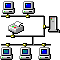

Grundlagen Computernetze
Grundlagen Computernetze
Inhalt
Einführung
Einführung
ISO-Referenzmodell für die Datenkommunikation
Paketvermittlung vs. Leitungsvermittlung
Leistungsparameter
Logische Struktur von Netzen
Zugriffsverfahren
ALOHA
CSMA/CD
Token-Ring
Token-Bus
Übertragungsverfahren
Ethernet
Ethernet II
Novells 802.3 raw
IEEE 802.2 und SNAP
Identifizierung des Ethernet-Interfaces
Signallaufzeiten, Slot Time
Einordnung Ethernet ins OSI-7-Schichten-Referenzmodell
Historisches
Entwicklung der Übertragungsmedien (IEEE 802.3)
Promiscous Mode
Power over Ethernet
Übertragungsmedien
Standard-Ethernet, 10Base5
AUI-Kabel (Transceiver-Kabel)
Thinwire-Ethernet (Cheapernet), 10Base2
Twisted-Pair, 10BaseT
Lichtwellenleiter
Gigabit-Ethernet
Anzeige-LEDs
Wie funktioniert Wake-on-LAN
Ethernetkarten konfigurieren unter Linux
Tabellen
Störquellen
Dämpfung
Begrenzung der Bandbreite
Verzerrungen durch Laufzeit
Rauschen
Reflexionen, Rückflußdämpfung, Nebensprechen
Repeater, Bridge, Router
Multiport-Repeater
Hub
Repeaterregel
Lichtwellenleiter (10BaseF, FOIRL) und Sternkoppler
Bridge
Switch
Router
Layer-3-Switching
Terminalserver
Gateway
Firewall-Rechner
VLAN - virtuelle lokale Netzwerke
Twisted-Pair-Verkabelung
Stecker und Buchsen
Steckerbelegung und Adernfarben
Fehlerquellen und Fehlersuche
Leitungsführung im Raum
Netz-Verkabelung und Netzplanung
Netz-Verkabelung
Netzplanung
Netz-Dokumentation
Fehlersuche/Belastungstest
TCP/IP
Die TCP/IP-Protokolle
ARP
IP - Internet Protocol
ICMP - Internet Control Message Protocol
UDP - User Datagram Protocol
TCP - Transmission Control Protocol
PPP - Point to Point Protocol
IP Next Generation
Domain Name System (DNS)
Zero Configuration Networking
Netzwerkkonfiguration am Beispiel Linux
Höhere Protokolle
DHCP
SMTP
POP
IMAP
FTP
HTTP
Weitverkehrsnetze, VoIP, Powerline, Funknetze
Übertragungsmedien für Weitverkehrsnetze
Voice over IP
Powerline Communications
Funk-LAN-Technologie
Weitere Drahtlos-Verfahren
Anhang
Literatur
Karte der Untersee-Kabelverbindungen
WLAN-Antennen (von M. Reimann)
Ethernet Kabeldiagnose
(National Semiconductor Application Note 1508)
TCP/IP-Ethernet bis Web-IO (Fa. Wiesemann & Theis)
Fit in einem Tag für TCP/IP-Sockets (Fa. Wiesemann & Theis)
Poster Internet-Protokolle (Fa. Wiesemann & Theis)
WLAN-Sicherheit
(Quelle:
BSI
)
Kostenlose Software von Reichle & De-Massari:
R&M Netplanner
Inside LSA plus
Optische Messtechnik für LAN Verkabelungen
Glasfasernetze zuverlässig betreiben
Systematische WLAN-Planung
RFC 1925: The Twelve Networking Truths
RFC3092: Etymology of "Foo"
RFC2324: Hyper Text Coffee Pot Control Protocol (HTCPCP/1.0)
RFC7168: The Hyper Text Coffee Pot Control Protocol for Tea Efflux Appliances (HTCPCP-TEA)
Download des Skripts
Copyright © Hochschule München, FB 04, Prof. Jürgen Plate